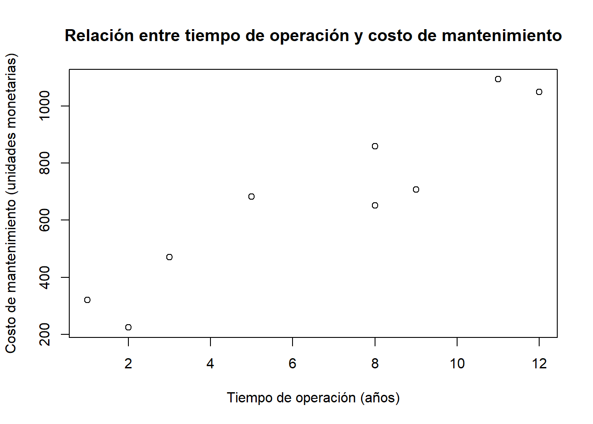
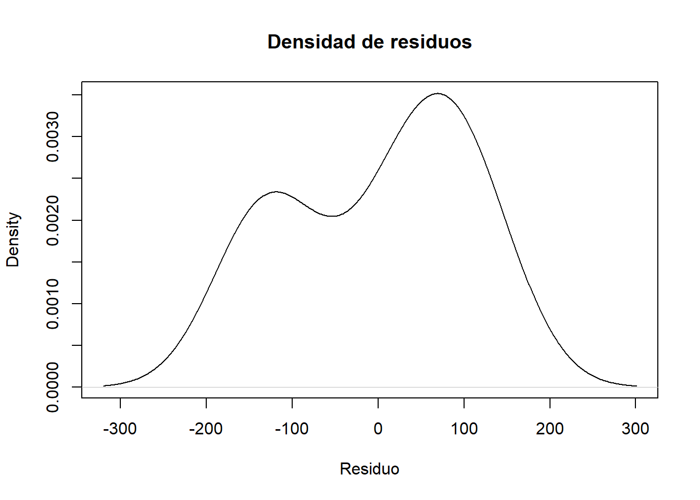

# Cargamos las librerías necesarias para el laboratorio
library(openxlsx) # leer archivos Excel (.xlsx)Capitulo 2 Correlación y Regresión Simple
1 1. Material descargable
Descargar PDF de contenidos teóricos
El PDF “Capitulo_2_Correlacion_regresion_simple” desarrolla los siguientes temas principales (a modo de índice):
- Covarianza y correlación.
- Diagramas de dispersión.
- Prueba de hipótesis para la correlación.
- Ecuaciones lineales y modelo lineal simple.
- Método de mínimos cuadrados.
- Residuos y error estándar de la estimación.
- Predicción e intervalos de confianza.
- Coeficiente de determinación simple (R^2).
- Prueba de hipótesis sobre el parámetro de pendiente (_1).
En este laboratorio llevaremos varios de estos conceptos a la práctica con R.
2 Configuración inicial en R
En esta sección cargaremos las librerías necesarias y definiremos la ruta a los datos.
2.1 Carga de librerías
Tip
Si alguna librería no está instalada, puedes hacerlo con:
install.packages("openxlsx")2.2 Definir la ruta de trabajo
Vamos a guardar la ruta donde están los datos en un objeto llamado ruta_datos.
Así solo modificamos una línea si cambiamos la carpeta en el futuro.
# Definimos la ruta donde están los archivos de datos del laboratorio.
# IMPORTANTE: Ajusta esta ruta si tu carpeta tiene otro nombre o ubicación.
ruta_datos <- "C:/Users/manue/Desktop/lab-econometria/labs_epg/data_epg"
# Podemos verificar el contenido de la carpeta (opcional)
list.files(ruta_datos) [1] "annos_mantenimiento.xlsx" "auto_peso_consumo.xlsx"
[3] "costos.xlsx" "data_PCA_Decathlon.csv"
[5] "data_PCA_ExpertWine.csv" "Ejemplo1.xlsx"
[7] "Ejemplo2.xlsx" "millaje.txt"
[9] "orange.csv" "tabla_ejemplo_R.xlsx"
Nota
En R es recomendable usar / (slash) en lugar de \ en las rutas de Windows.
Por eso escribimos "C:/Users/manue/Desktop/..." en lugar de "C:\\Users\\...".
3 Ejemplo 1: Correlación entre peso del auto y consumo de gasolina
En este ejemplo estudiaremos la relación entre:
Peso_Libras: peso del automóvil (en libras).
Consumo_Millas_por_galon: rendimiento (millas por galón).
La idea es:
- Graficar un diagrama de dispersión.
- Calcular el coeficiente de correlación.
- Realizar una prueba de hipótesis para ver si la correlación es distinta de cero.
3.1 Lectura de los datos de autos
archivo_autos <- file.path(ruta_datos, "auto_peso_consumo.xlsx")
datos <- read.xlsx(
archivo_autos,
sheet = "Hoja1",
colNames = TRUE
)
# Vemos las primeras filas
head(datos) Auto Peso_Libras Consumo_Millas_por_galon
1 1 2743 21.4
2 2 3518 15.2
3 3 1855 38.9
4 4 5214 12.7
5 5 4341 17.8Esperamos que el archivo contenga, al menos, las columnas:
Peso_Libras
Consumo_Millas_por_galon
3.2 Diagrama de dispersión
El diagrama de dispersión nos permite ver visualmente si existe una relación lineal entre las variables.
plot(
datos$Peso_Libras,
datos$Consumo_Millas_por_galon,
xlab = "Peso (libras)",
ylab = "Consumo (millas por galón)",
main = "Relación entre peso del auto y consumo"
)
Nota
- Si al aumentar el peso el consumo (millas por galón) disminuye, la nube de puntos tendrá una forma descendente → correlación negativa.
- Si al aumentar el peso el consumo aumentara, veríamos una nube ascendente → correlación positiva.
- Si no hay patrón claro, la correlación podría ser cercana a cero.
3.3 Cálculo de la correlación
El coeficiente de correlación de Pearson mide la intensidad y dirección de la relación lineal entre dos variables numéricas.
r <- cor(datos$Peso_Libras, datos$Consumo_Millas_por_galon)
r[1] -0.8549912- (r) está entre -1 y 1.
- (r < 0): relación negativa.
- (r > 0): relación positiva.
- (|r|) cercano a 1 → relación lineal fuerte.
- (|r|) cercano a 0 → relación lineal débil.
3.4 Prueba de hipótesis para la correlación (cálculo manual)
En la teoría se plantea la prueba:
\[ H_0: \rho = 0 \quad \text{vs} \quad H_1: \rho \neq 0 \]
La idea es ver si la correlación poblacional () podría ser cero o no.
En el script se calcula el error estándar del coeficiente de correlación y luego el estadístico t:
# Cálculo manual basado en la fórmula del error estándar de r
sr <- sqrt((1 - r) / 3) # comentario original: n número de datos menos 2
t <- r / sr # estadístico t aproximado
t[1] -1.087305Luego se calcula el valor crítico y el p-valor usando la distribución t de Student:
c <- qt(0.025, 3, lower.tail = FALSE) # valor crítico (cola superior)
c[1] 3.182446# p-valor aproximado
pt(-t, 3, lower.tail = FALSE)[1] 0.1782267
Nota
- Si el p-valor es pequeño (por ejemplo, menor que 0.05), rechazamos (H_0) y concluimos que la correlación es significativamente distinta de cero.
- Si el p-valor es grande, no tenemos evidencia suficiente para afirmar que exista correlación lineal distinta de cero.
3.5 Prueba de hipótesis para la correlación con cor.test
En lugar de hacer todos los cálculos “a mano”, R nos ofrece la función cor.test, que:
- Calcula el coeficiente de correlación.
- Realiza la prueba de hipótesis.
- Entrega el p-valor y un intervalo de confianza para ().
cor.test(datos$Peso_Libras, datos$Consumo_Millas_por_galon)
Pearson's product-moment correlation
data: datos$Peso_Libras and datos$Consumo_Millas_por_galon
t = -2.8553, df = 3, p-value = 0.06483
alternative hypothesis: true correlation is not equal to 0
95 percent confidence interval:
-0.9902684 0.1110238
sample estimates:
cor
-0.8549912
Tip
Siempre que sea posible, conviene verificar los resultados manuales con funciones integradas como cor.test, ya que éstas manejan bien detalles como el tamaño de muestra, grados de libertad y supuestos.
4 Ejemplo 2: Correlación y regresión del costo de mantenimiento
En este ejemplo utilizamos datos de:
Tiempo_operacion: años de operación de un bus.
Costo_Mantenimiento: costo anual de mantenimiento (por ejemplo, en dólares).
Queremos:
- Ver si existe correlación entre el tiempo de operación y el costo de mantenimiento.
- Ajustar una regresión lineal simple para predecir el costo a partir del tiempo.
- Evaluar los residuos y la calidad del ajuste.
- Calcular predicciones e intervalos de confianza.
4.1 Lectura de los datos de mantenimiento
archivo_mant <- file.path(ruta_datos, "annos_mantenimiento.xlsx")
datos2 <- read.xlsx(
archivo_mant,
sheet = "Hoja1",
colNames = TRUE
)
head(datos2) Bus Costo_Mantenimiento Tiempo_operacion
1 1 859 8
2 2 682 5
3 3 471 3
4 4 708 9
5 5 1094 11
6 6 224 2Esperamos las columnas:
Tiempo_operacion
Costo_Mantenimiento
4.2 Diagrama de dispersión
plot(
datos2$Tiempo_operacion,
datos2$Costo_Mantenimiento,
xlab = "Tiempo de operación (años)",
ylab = "Costo de mantenimiento (unidades monetarias)",
main = "Relación entre tiempo de operación y costo de mantenimiento"
)
Nota
Este gráfico permite ver si al aumentar los años de operación los costos de mantenimiento tienden a subir.
Si la nube de puntos sugiere una recta ascendente, tiene sentido ajustar un modelo lineal.
4.3 Cálculo de la correlación y prueba de hipótesis
r <- cor(datos2$Tiempo_operacion, datos2$Costo_Mantenimiento)
r[1] 0.9376733Nuevamente, calculamos el error estándar y el estadístico t de forma manual (siguiendo la lógica del script original):
sr <- sqrt((1 - r) / 7) # comentario original: aquí se usa 7 como "n - 2"
t <- r / sr
t[1] 9.937184Se podría obtener un valor crítico (aunque en el script se reutiliza un valor con 3 grados de libertad), y luego:
cor.test(datos2$Tiempo_operacion, datos2$Costo_Mantenimiento)
Pearson's product-moment correlation
data: datos2$Tiempo_operacion and datos2$Costo_Mantenimiento
t = 7.1388, df = 7, p-value = 0.0001872
alternative hypothesis: true correlation is not equal to 0
95 percent confidence interval:
0.7250800 0.9870994
sample estimates:
cor
0.9376733
Tip
cor.test es la forma recomendada de hacer la prueba de hipótesis para la correlación, ya que usa la fórmula teórica correcta y ajusta automáticamente los grados de libertad.
4.4 Ajuste del modelo de regresión lineal simple
Planteamos el modelo:
\[\text{Costo\_Mantenimiento} = \beta\_0 + \beta\_1 \cdot \text{Tiempo\_operacion} + \varepsilon \]
Lo estimamos con lm:
modelo <- lm(Costo_Mantenimiento ~ Tiempo_operacion, data = datos2)
summary(modelo)
Call:
lm(formula = Costo_Mantenimiento ~ Tiempo_operacion, data = datos2)
Residuals:
Min 1Q Median 3Q Max
-138.47 -124.55 40.88 83.45 119.21
Coefficients:
Estimate Std. Error t value Pr(>|t|)
(Intercept) 208.203 75.002 2.776 0.027457 *
Tiempo_operacion 70.918 9.934 7.139 0.000187 ***
---
Signif. codes: 0 '***' 0.001 '**' 0.01 '*' 0.05 '.' 0.1 ' ' 1
Residual standard error: 111.6 on 7 degrees of freedom
Multiple R-squared: 0.8792, Adjusted R-squared: 0.862
F-statistic: 50.96 on 1 and 7 DF, p-value: 0.0001872El output de summary(modelo) incluye:
- Estimaciones de (_0) (intercepto) y (_1) (pendiente).
- Error estándar de cada coeficiente.
- Estadístico t y p-valor para probar si los coeficientes son distintos de cero.
- (R^2): porcentaje de variabilidad en el costo explicado por el tiempo de operación.
Nota
- Si el p-valor asociado a la pendiente (_1) es pequeño (ej. < 0.05), concluimos que el tiempo de operación es un buen predictor del costo de mantenimiento.
- Un (R^2) alto indica que el modelo lineal explica gran parte de la variabilidad del costo.
4.5 Predicción para 5 años de operación
Supongamos que queremos predecir el costo de mantenimiento para un bus con 5 años de operación.
nuevo <- data.frame(Tiempo_operacion = c(5)) # valor donde evaluamos el modelo
valor_predicho <- predict(object = modelo, newdata = nuevo)
valor_predicho 1
562.794 Este es el valor esperado de costo de mantenimiento según el modelo lineal.
4.6 Análisis de residuos
Los residuos son las diferencias entre los valores observados y los valores ajustados por el modelo:
\[ \hat{\varepsilon}\_i = y_i - \hat{y}\_i \]
# Vector de residuos
modelo$residuals 1 2 3 4 5 6 7
83.45158 119.20599 50.04225 -138.46655 105.69718 -126.03961 40.87852
8 9
-124.54842 -10.22095 # Histograma de residuos
hist(
modelo$residuals,
main = "Histograma de residuos",
xlab = "Residuo"
)
# Densidad de los residuos
plot(
density(modelo$residuals),
main = "Densidad de residuos",
xlab = "Residuo"
)
# Media de los residuos
mean(modelo$residuals)[1] -2.368187e-15
Nota
- En un buen modelo lineal, los residuos deberían:
- Tener media cercana a cero.
- No mostrar patrones sistemáticos.
- Aproximarse a una distribución normal (especialmente importante para los intervalos de confianza).
- Tener media cercana a cero.
- El histograma y la densidad ayudan a evaluar visualmente estas propiedades.
4.7 Cálculo del error estándar de la estimación (s_{y,x})
El script calcula manualmente el error estándar de la estimación a partir de los residuos:
\[ s\_{y,x} = \sqrt{\frac{\sum \hat{\varepsilon}_i^2}{n - 2}} \]
s_yx <- sqrt(sum(modelo$residuals^2) / 7) # aquí se usa 7 como "n - 2"
s_yx[1] 111.6097Este valor mide la dispersión típica de los puntos alrededor de la recta de regresión.
4.8 Intervalo de predicción para un valor individual (x_0 = 5)
Para un valor específico (x_0 = 5), el error estándar de la predicción se calcula (según la teoría) como:
\[ s\_{\hat{y}x} = s\_{y,x} \sqrt{1 + \frac{1}{n} + \frac{(x_0 - \bar{x})^2}{\sum (x_i - \bar{x})^2}} \]
El script implementa esto en varios pasos.
raiz <- sqrt(
1 +
1 / 9 +
(5 - mean(datos2$Tiempo_operacion))^2 /
sum((datos2$Tiempo_operacion - mean(datos2$Tiempo_operacion))^2)
)
s_hatyx <- s_yx * raiz
s_hatyx[1] 118.6576Luego se obtiene el valor crítico t y se calculan los límites del intervalo de predicción:
t_crit <- qt(0.025, 7, lower.tail = FALSE) # valor crítico t para 95%
lim_sup <- valor_predicho + t_crit * s_hatyx
lim_inf <- valor_predicho - t_crit * s_hatyx
lim_inf 1
282.2134 lim_sup 1
843.3746
Nota
- Este intervalo responde a la pregunta:
> “¿En qué rango esperamos que caiga un nuevo costo de mantenimiento individual para un bus con 5 años de operación, con un 95% de confianza?”
- Es más ancho que el intervalo para la media porque incluye la variabilidad individual.
4.9 Intervalo de confianza para la media del costo cuando (x_0 = 5)
Si en lugar de un valor individual queremos estimar la media poblacional del costo para buses con 5 años de operación, el error estándar es:
\[ s\_{\hat{\mu}x} = s\_{y,x} \sqrt{\frac{1}{n} + \frac{(x_0 - \bar{x})^2}{\sum (x_i - \bar{x})^2}} \] En el script:
raiz1 <- sqrt(
1 / 9 +
(5 - mean(datos2$Tiempo_operacion))^2 /
sum((datos2$Tiempo_operacion - mean(datos2$Tiempo_operacion))^2)
)
s_hatmux <- s_yx * raiz1
s_hatmux[1] 40.28504Sin embargo, una forma más directa es usar predict con interval = "confidence":
valor_predicho_conf <- predict(
object = modelo,
newdata = nuevo,
interval = "confidence" # intervalo de confianza para la media
)
valor_predicho_conf fit lwr upr
1 562.794 467.535 658.053
Tip
interval = "confidence": intervalo de confianza para la media del costo en (x_0).
interval = "prediction": intervalo de predicción para un nuevo valor individual.
5 Resumen del laboratorio
En este laboratorio aprendiste a:
- Construir y analizar diagramas de dispersión.
- Calcular el coeficiente de correlación y probar si es significativamente distinto de cero.
- Ajustar un modelo de regresión lineal simple en R con
lm.
- Interpretar el output de
summary(modelo)(coeficientes, p-valores, (R^2)).
- Analizar los residuos para evaluar los supuestos del modelo.
- Calcular predicciones puntuales.
- Construir intervalos de predicción e intervalos de confianza usando tanto fórmulas como la función
predict.
Estos conceptos son fundamentales para los análisis econométricos que verás más adelante, donde la regresión lineal es una herramienta central.